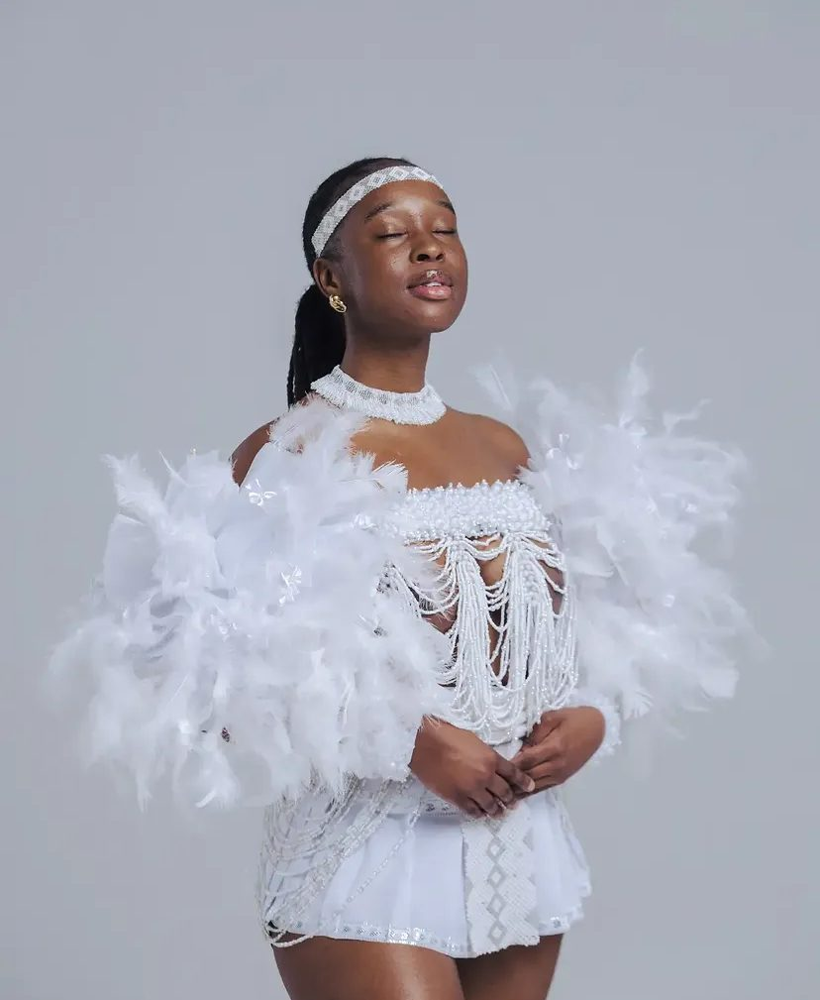
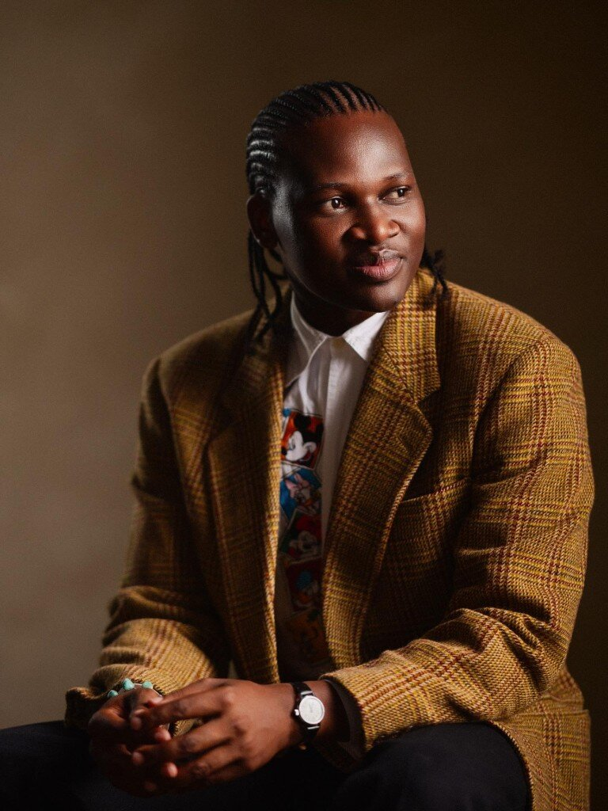

About Motion Studio

Our Story
Motion Studio is a family-run photography studio in Durban. It was started to give photographers and everyday clients a dedicated space to create professional images, without having to worry about finding a location, lighting, or a backdrop that fits their vision. The studio is run day to day by the founder and her siblings. See what we offer on our services page, or visit us on Station Drive.
Our Mission
To help creatives and their clients bring their photography vision to life, in a studio space that is comfortable, well equipped, and built for creativity.
Our Vision
To become the go-to creative studio space for photographers and personal shoots alike.
What Makes Motion Studio Different
Motion Studio is a family-run space built by people who work in photography every day. We offer more than a blank room — themed and decorated backgrounds, professional lighting, and the option to book an in-house photographer so clients don't have to organise everything themselves.

Meet the Team
-

Founder & Studio Owner
Oversees the studio, bookings, and client experience.
Ready to book your session?
Book Your Session